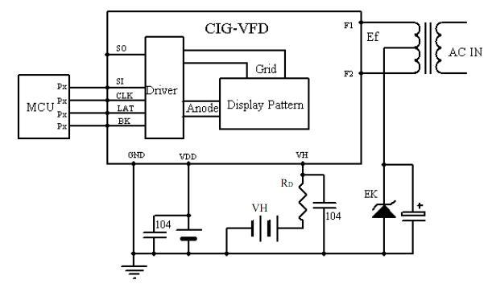
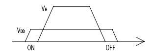
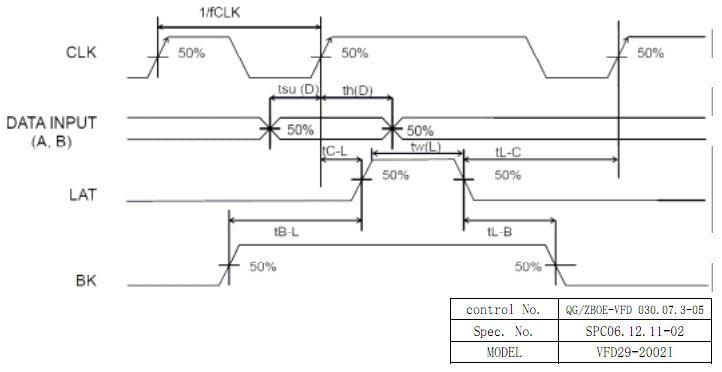

This is a 20x2 VFD display with a character height of 6mm. We got it from BOE display technology but wasn't able to find a right driving circuit for it. If you have the interest in building a driver for this display, please add this to your shopping cart. We've already provided a full data-sheet from below link, enjoy.
Model: VFD101B1B
http://www.seeedstudio.com/depot/images/product/vfd29.jpg
Precautions should be taken to minimize the possibility of static charges occuring during handing and assembly of the VFDs.

Note:
The series resister RD =22Ω is resister for limitation of over current. The capacitors for noise filter to the VH and VD.
| Item | Symbol | Test Condition | Min | Typical | Max | Unit | |
| Filament Current | If | Ef=4.5Vac | 135.0 | 150.0 | 165.0 | mA | |
| Supply Current | IDD | No Load | - | - | 1 | mA | |
| Hi-level Input Current | IIH | VIH=VDD | LAT, CLK, SI, BK | - | 0.1 | 1.0 | µA |
| Lo-level Input Current | IIL | VIL=0V | LAT, CLK, SI | - | 0.1 | 1.0 | µA |
| BK | -30 | -50 | -100 | ||||
| Luminance | L(G) | Ef=4.5Vac
VH Ek=5.0 Vdc Duty=1/21 |
350(102) | 700(204) | - | cd/m2(fl) | |
| - | - | - | - | cd/m2(fl) | |||
| - | - | - | cd/m2(fl) | ||||
| Luminance Ratio | Lmin/Lmax | 50 | - | - | % | ||
| Function | Symbol | Input/Output | Description |
|---|---|---|---|
| Shift clock input | CLK | Input | The serial data at the rising shifted on the rising edge is read by the shift register |
| Serial Data Input | SI | Input | Serial Data Input Pin |
| Latch Input Pin | LAT | Input | The shift register data is put on hold at the dalling edge |
| Blanking Input Pins | VH | - | High voltage Pins for Driver |
| Logic power Supply | VDD | - | Power Supply to Logic Circuit |
| Ground | GND | - | Ground of Pin |
| Serial Data Output | SO | output | Serial Data output Pin |
Note:
Drive mode: Dynamic state
| Item | Symbol | Terminals | Ratings | Unit |
|---|---|---|---|---|
| Filament Voltage | Ef | F,F | 5.4 | Vac |
| Logic Supply Voltage | VDD | VDD | -0.3~+6.0 | Vdc |
| Driver Supply Voltage | VH | VH | -0.3~60 | Vdc |
| Logic Input Voltage | VIN | BK,LAT,CLK,SI | -0.3~VDD+0.3 | Vdc |
| Operating Temperature | Top | - | -40~+85 | ℃ |
| Storage Temperature | Tstg | - | -45~+85 | ℃ |
| Item | Symbol | Condition | Min | TYP | Max | Unit |
|---|---|---|---|---|---|---|
| Filament Voltage | Ef | - | 4.1 | 4.5 | 4.9 | Vac |
| Cut-off voltage | Ek | - | 5.0 | - | - | Vdc |
| Logic Supply Voltage | VDD | - | 4.5 | 5.0 | 5.5 | Vdc |
| Driver Supply Voltage | VH | - | 30.0 | 40.0 | 43.0 | Vdc |
| Hi-level Logic Input | VIH | Logic Input | VDDX0.7 | - | VDD | Vdc |
| Clock Frequency | fclk | - | - | - | 8.0 | MHz |
| Outer Dimensions | Panel Length | 125.0mm |
| Panel height | 29.0mm | |
| Panel thickness | 8.0±0.5mm | |
| Lead | Lead Pitch | 2.0mm |
| Lead Out | single-row bending |

VDD should be applied and higher than 4.5V when applying VH.
VDD and VH should be on at the same time, or VH should be on after VDD is on.
VDD and VH should be off at the same time, or VDD should be off after VH is off.

Includes important code snippet. Demo code like :
Demo code { }
The projects and application examples.
All the components used to produce the product.
Please list your question here:
If you have questions or other better design ideas, you can go to our forum or wish to discuss.
| Revision | Descriptions | Release |
|---|---|---|
| v0.9b | Initial public release | July 06, 2010 |
Bug Tracker is the place you can publish any bugs you think you might have found during use. Please write down what you have to say, your answers will help us improve our products.
The Additional Idea is the place to write your project ideas about this product, or other usages you've found. Or you can write them on Projects page.
The resources need to be downloaded, like Eagle file, Demo code, project or other datasheet.
Click here to buy: http://www.seeedstudio.com/depot/20x2-vfd-display-vfd292002i-p-673.html?cPath=163_189&zenid=c53d9f0c1da988767e52b400f476853c.
This documentation is licensed under the Creative Commons Attribution-ShareAlike License 3.0 Source code and libraries are licensed under GPL/LGPL, see source code files for details.
Links to external webpages which provide more application ideas, documents/datasheet or software libraries.
Copyright (c) 2008-2016 Seeed Development Limited (www.seeedstudio.com / www.seeed.cc){kind=link}